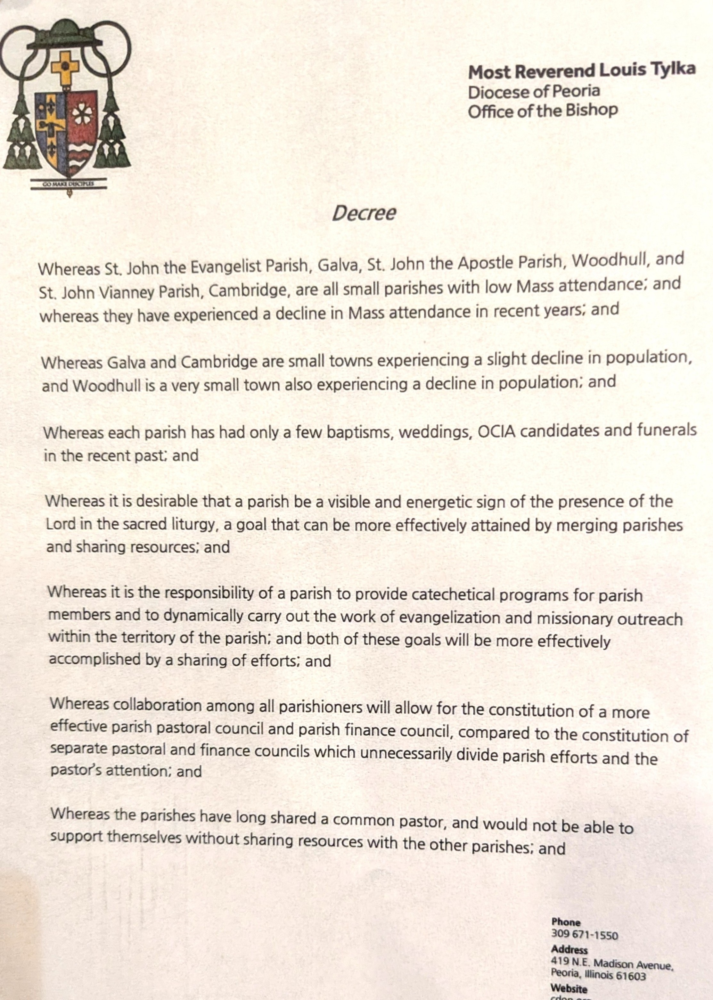
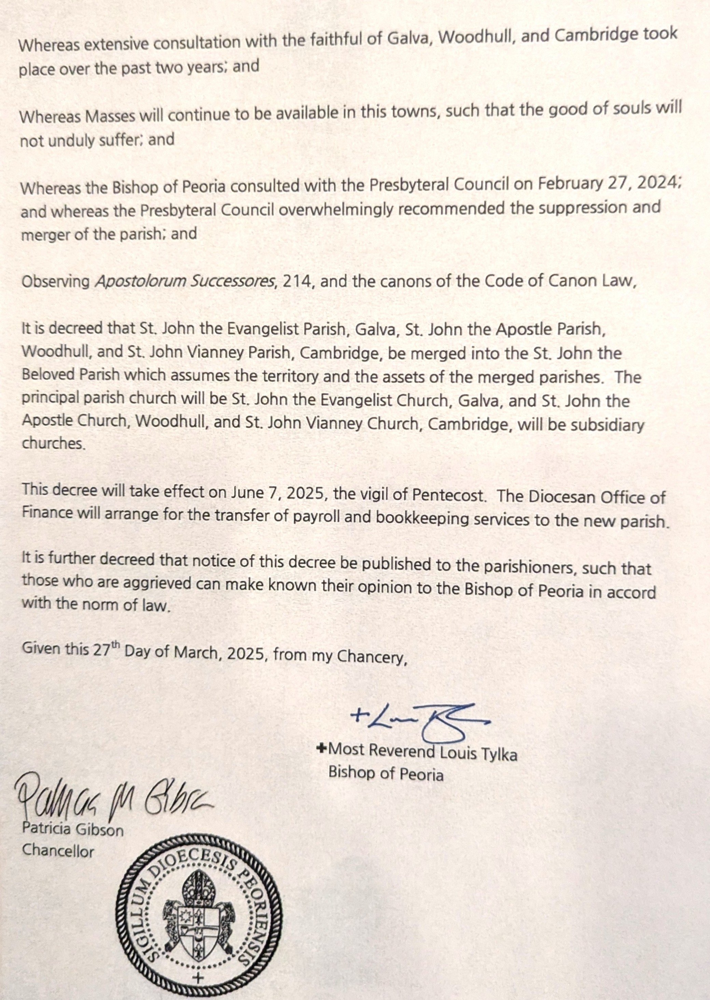

Notifications
2025-03-30: Decree from most Reverend Bishop Tylka
Scroll down for verbiage which may be easier to read.
|  |  |
|
Most Reverend Louis Tylka Diocese of Peoria Office of the Bishop Decree Whereas St. John the Evangelist Parish, Galva, St. John the Apostle, Woodhull and St. John Vianney Parish, Cambridge, are all small parishes with low Mass attendance; and whereas they have experienced a decline in Mass attendance in recent years; and Whereas Galva and Cambridge are small towns experiencing a slight decline in population, and Woodhull is a very small town also experiencing a decline in population; and Whereas each parish has only a few baptisms, weddings, OCIA candidates and funerals in the recent past; and Whereas it is desirable that a parish be a visible and energetic sign of the presence of the Lord in sacred liturgy, a goal that can be more effectively attained by merging parishes and sharing resources; and Whereas it is the responsibility of the parish to provide catechetical programs for parish members and to dynamically carry out the work of evangelization and missionary outreach within the territory of the parish; and both of these goals will be more effectively accomplished by a sharing of efforts; and Whereas collaboration among all parishioners will allow for the constitution of a more effective parish pastoral council and parish finance council, compared to the constitution of separate pastoral and financial councils which unnecessarily divide parish efforts and the pastor’s attention; and Whereas the parishes have long shared a common pastor, and would not be able to support themselves without sharing resources with other parishes; and Whereas extensive consultation with the faithful of Galva, Woodhull, and Cambridge took place over the past two years; and Whereas Masses will continue to be available in this towns, such that the good of souls will not unduly suffer; and Whereas the Bishop of Peoria consulted with the Presybyteral Council overwhelmingly recommended the suppression and merger of the parish; and Observing Apostolorum Successores, 214, and the canons of the Code of Canon Law, It is decreed that St. John the Evangelist Parish, Galva, St. John the Apostle Parish, Woodhull, and St. John Vianney Parish, Cambridge, be merged into St. John the Beloved Parish which assumes the territory and the assets of the merged parishes. The principal parish church will be St. John the Evangelist, Church, Galva, and St. John the Apostle Church, Woodhull, and St. John Vianney, Church, Cambridge will be subsidiary churches. This decree will take effect on June 7, 2025, the vigil of Pentecost. The Disocesan Office of Finance will arrange for the transfer of patrol and bookkeeping services to the new parish. It is further decreed that notice of this decree be published to the parishioners, such that those who are aggrieved can make known their opinion to the Bishop of Peoria in accord with the norm of law. Given this 27th Day of March 2025, from my Chancery. Most Reverend Louis Tylka Bishop of Peoria |